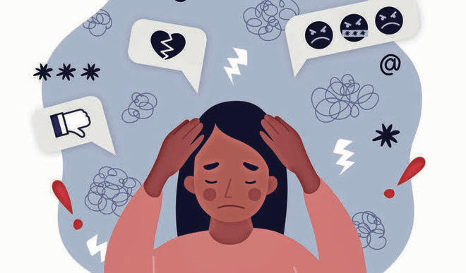

 Social media addiction is a type of behavioral addiction that is broadly defined as compulsive engagement in social media platforms that significantly disrupts the users' functioning in important life domains, such as interpersonal relations, work or study performance, and physical health.
The addictive nature of social media can be attributed to several factors. One of the main factors is the dopamine-driven reward system in our brains.
When we receive likes, comments or shares our brain releases dopamine. This neurotransmitter creates feelings of pleasure and satisfaction. Over time, we start to crave these positive feelings. We may find ourselves checking social media more frequently to get our ‘dopamine fix.’